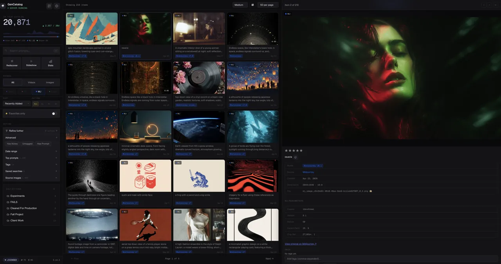

GenCatalog 5.16.92 Mac + Windows
Your download is starting.
We’re preparing the right GenCatalog installer for this computer.
Preparing your download
You can also use the direct link below.
7-day free trial Up to 250 saves No credit card $99/year after trial Plus applicable taxes

From download to first save
Three steps. Then your work has a memory.
Keep this page open while the installer downloads. The complete setup usually takes only a few minutes.
-
01
Install the desktop app.
Open the DMG or Windows installer, then launch GenCatalog.
-
02
Add the Chrome extension.
Install from the Chrome Web Store so Save appears where you create.
-
03
Choose your catalog folder.
Your files, prompts, and metadata stay together on your computer.
Something not downloading?